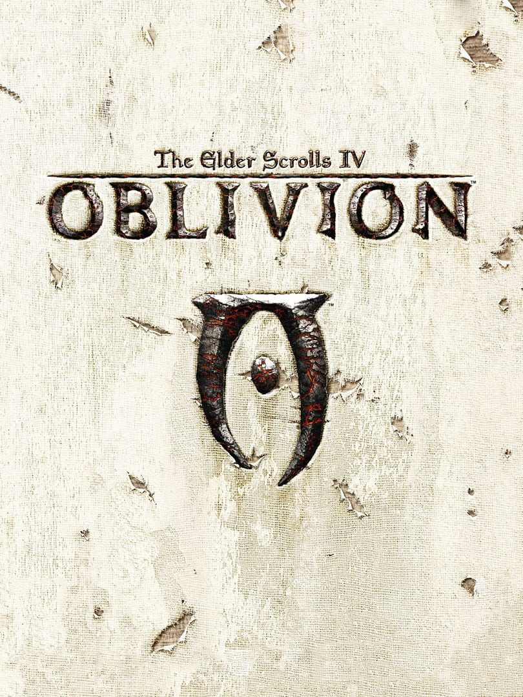

The Elder Scrolls IV: Oblivion
The Elder Scrolls IV: Oblivion
Details
|  | |
| Spielzeit | Nicht gespielt |
| Letzte Aktivität | 17.02.2018 22:51:53 |
| Hinzugefügt | 19.12.2019 |
| Modifiziert | 12.12.2022 0:49:57 |
| Fertigstellungsstatus | Not Played |
| Bibliothek | Steam |
| Quelle | Steam |
| Plattform | PC (Windows) |
| Veröffentlichungsdatum | 16.06.2009 |
| Community Bewertungen | 86 |
| Kritiker Punkte | 94 |
| Benutzerwertung | |
| Genre | Open World 🐎 RPG |
| Entwickler | Bethesda Game Studios |
| Verleger | Bethesda Softworks |
| Eigenschaft | Cloud Saves Single Player |
| Links | Community Hub Discussions News Store Page PCGamingWiki |
| Tag | Steam Cloud |
Beschreibung
The Elder Scrolls IV: Oblivion® Game of the Year Edition presents one of the best RPGs of all time like never before. Step inside the most richly detailed and vibrant game-world ever created. With a powerful combination of freeform gameplay and unprecedented graphics, you can unravel the main quest at your own pace or explore the vast world and find your own challenges.
Also included in the Game of the Year edition are Knights of the Nine and the Shivering Isles expansion, adding new and unique quests and content to the already massive world of Oblivion. See why critics called Oblivion the Best Game of 2006.
Key features:
Also included in the Game of the Year edition are Knights of the Nine and the Shivering Isles expansion, adding new and unique quests and content to the already massive world of Oblivion. See why critics called Oblivion the Best Game of 2006.
Key features:
- Live Another Life in Another World
Create and play any character you can imagine, from the noble warrior to the sinister assassin to the wizened sorcerer.
- First Person Melee and Magic
An all-new combat and magic system brings first person role-playing to a new level of intensity where you feel every blow.
- Radiant AI
This groundbreaking AI system gives Oblivion's characters full 24/7 schedules and the ability to make their own choices based on the world around them. Non-player characters eat, sleep, and complete goals all on their own.
- New Lands to Explore
In the Shivering Isles expansion, see a world created in Sheogorath's own image, one divided between Mania and Dementia and unlike anything you've experienced in Oblivion.
- Challenging new foes
Battle the denizens of Shivering Isles, a land filled with hideous insects, Flesh Atronachs, skeletal Shambles, amphibious Grummites, and many more.
- Begin a New Faction
The Knights of the Nine have long been disbanded. Reclaim their former glory as you traverse the far reaches of Cyrodill across an epic quest line.